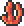
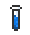

Coral
| Coral | |
|---|---|
|  | |
| Statistics | |
| Type | Crafting material Furniture |
| Placeable | Yes |
| Dimensions | 2 wide2 high |
| Max stack | 250 |
| Use time | 14 |
| Tool | Hammer |
| Sell | 80 |
It can be harvested either with a hammer, by mining out the sand underneath it, or by placing a block next to it. It can be placed as a decoration and will have one of many appearances, much like Books. While each piece of coral only needs one block under it, it essentially takes up an extra half-space on each side, preventing walls or objects from being placed directly to either side. For example, to place 5 corals between walls, you would need the walls to be at least 11 blocks apart. To fit the same 5 coral on an open platform, it need only be 9 blocks wide.
Crafting
Used in
| Result | Ingredients | Crafting Station | |
|---|---|---|---|
|  | Gills Potion | Bottled Water(1) | |
| Waterleaf(1) | |||
| Coral(1) | |||
| | Neptune's Shell | Soul of Fright(20) | |
| Coral(15) | |||
| Goldfish(15) | |||
| Shark Fin(5) | |||
| Soul of Light(5) | |||
| Soul of Night(5) | |||
History
- 1.0.5: Introduced.
| Decorative items |
|---|
| Banner Bathtub Bench Book Coral Dresser Piano Sign Throne Toilet Mannequin Crystal Ball |